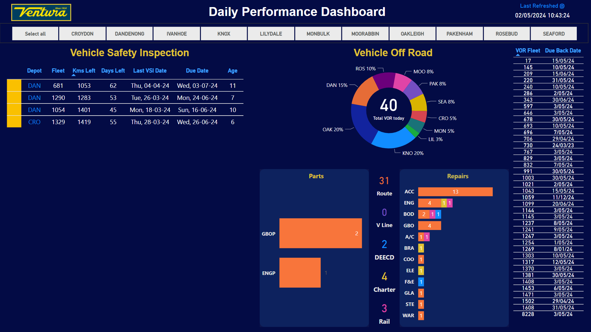
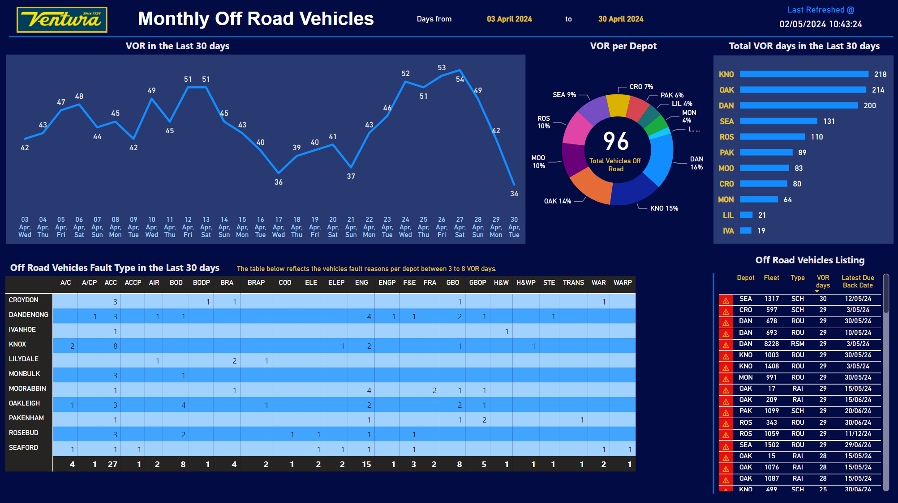

Project Overview
This project focuses on developing a system that intelligently monitors and manages accident data. By leveraging advanced machine learning models and real-time data processing, the system aims to enhance road safety and provide actionable insights for authorities.
Daily Performance Monitoring
The Accident Severity Dashboard visualizes data on the frequency and severity of accidents in various locations. This dashboard helps to identify high-risk areas and informs decision-making for road safety improvements.
Monthly Trend Vehicle Off-Road
The Real-Time Monitoring Dashboard provides live updates on ongoing incidents. It displays accident locations, time, and severity level, enabling quick responses from emergency services.
Conclusion
The Intelligent Accidents Monitoring and Management System represents a significant advancement in road safety technology. By combining data visualization with predictive modeling, it provides a comprehensive tool for managing and mitigating the impact of road accidents.